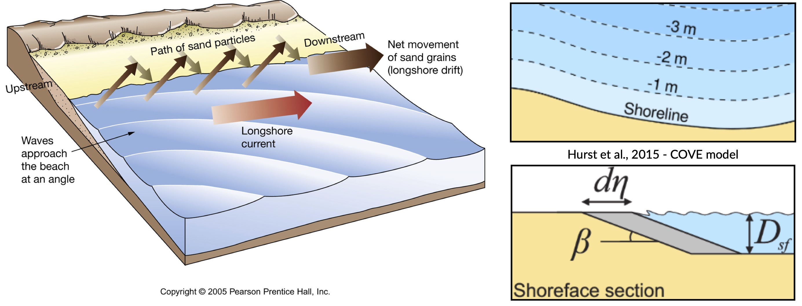

Coastline evolution notes¶
Longshore drift¶
Longshore drift is induced by longshore current and transport sediments (clay, silt, pebbles, sand and shingle) along coastlines parallel to the shoreline and depends on oblique incoming wave direction.
Oblique incoming waves push water along the coast, and generate a water current which moves parallel to the coast. Longshore drift is the sediment movement associated with this longshore current. This sediment movement occurs within the surf zone.
One-line model
This video explains how longshore drift is simulated using 1-line model.
As we have seen in the previous video, one-line models of shoreline evolution can reproduce embayed beach morphology in the lee of a headland or promontory. They are based on simple rules to describe the adjustment in wave height and direction due to diffraction in the shadow of a promontory and demonstrated that the resulting bay forms were similar in form to a logarithmic spiral.
{kind=link}
In one-line models, the shoreline is represented by a single line (or contour) that advances or retreats depending on the net alongshore sediment flux. One-line models make a number of simplifying assumptions to conceptualise the coastline allowing the ‘one-line’ representation of the coastline:
Short-term cross-shore variations due to storms or rip currents are considered temporary perturbations to the long-term trajectory of coastal change (i.e. the shoreface recovers rapidly from storm-driven cross-shore transport).
The beach profile is thus assumed to maintain a constant time-averaged form, implying that depth contours are shore-parallel and therefore allows the coast to be represented by a single contour line (right panels in top figure).
Alongshore sediment transport occurs primarily in the surf zone, and cross-shore sediment transport acts to maintain the equilibrium shoreface as it advances /retreats.
Alongshore sediment flux occurs due to wave action in the surf zone, parameterized by the height and angle of incidence of breaking waves. Gradients in alongshore transport dictate whether the shoreline advances or retreats.
Bulk alongshore sediment flux is driven by waves breaking on the shoreface. Typically in alongshore transport laws, flux depends on the height \(H_b\) and angle \(\alpha_b\) of breaking waves. For example, the CERC equation is given by:
where \(K_{ls}\) is a transport coefficient. The transport coefficient \(K_{ls}\) may be modified to account for the size of beach material (\(D_{50}\)). Calibration of this coefficient can be made from estimates of bulk alongshore transport or by calibration against a historical record of coastal change (e.g. Barkwith et al. (2014)).
Analysing shoreline changes¶
Space-borne observations have been employed in a wide range of change detection applications, including the analysis of meandering river morphodynamics, delineation of wetland footprints and identification of oil spills.
Recently, optical imaging satellites have begun to be used to measure the location of the shoreline, which is regarded by coastal managers, planners, engineers and scientists as a key indicator of how coastlines vary and evolve over time.
Nowadays, it is possible to use image composites from satellites to map the position of the shoreline with a horizontal accuracy of the order of half a pixel (i.e., 15 m for Landsat images and 5 m for Sentinel-2 images). Some studies have even managed to detect shoreline at a sub-pixel resolution technique in low-energy microtidal beach and reported horizontal accuracies of less than 10 m using Landsat 7, Landsat 8 and Sentinel-2 images.
Important
Satellite remote sensing can provide low-cost long-term shoreline data capable of analysing multi-decadal temporal changes relevant to coastal scientists and engineers at sites where no in-situ field measurements are available.
CoastSat is an example of such open-source package developed at the Water Research Laboratory in Manly that can be used to obtain time-series of shoreline position at any coastline worldwide from 30+ years (and growing) of publicly available satellite imagery.
It enables the non-expert user to extract shorelines from Landsat 5, Landsat 7, Landsat 8 and Sentinel-2 images. The shoreline detection algorithm implemented in CoastSat is optimised for sandy beach coastlines. It combines a sub-pixel border segmentation and an image classification component, which refines the segmentation into four distinct categories such that the shoreline detection is specific to the sand/water interface.
The toolbox has three main functionalities:
assisted retrieval from Google Earth Engine of all available satellite images spanning the user-defined region of interest and time period.
automated extraction of shorelines from all the selected images using a sub-pixel resolution technique
intersection of the 2D shorelines with user-defined shore-normal transects

Fig. 19 Example region of interest within RGB image located at Narrabeen-Collaroy in southeast Australia, Sentinel-2 (using CoastSat).¶
Embayed beaches¶
The curved planform morphology of embayed beaches can be observed at various length-scales at coastlines, from a few hundred meters to several kilometers. These bays occur in the lee of headlands or man-made coastal structures where erosion and/or littoral drift is inhibited in the face of a dominant direction of wave incidence (Hurst et al., 2015). A highly concave portion of shoreline forms on the down-drift side of the headland where the coastline is shadowed from the dominant wave direction and subject to waves that diffract around the headland.
Embayed beaches tend toward an equilibrium form under a prevailing wave climate. The planform morphology will adjust until gradients in alongshore sediment flux are minimised (net alongshore sediment flux is constant). Alongshore sediment flux will be negligible on an equilibrium coastline when there are no external sediment inputs. Subsequent changes in planform morphology may occur such as beach rotation, driven by changes in wave climate characteristics that alter alongshore sediment transport.
Embayed beaches evolution
We will use the BaySensitivity.ipynb to simulate the evolution of embayed beach under different wave climates using the COVE model Hurst et al., 2015.
Regional scale models¶
Many complex models exist to evaluate the complex interactions between ocean hydrodynamics and sediment transport like xBeach, ROMS, Delft3d, FVCOM to cite a few.

Fig. 20 Nearshore zonation.¶
As an example, the nearshore wave propagation model XBeach solves coupled 2D horizontal equations for wave propagation, flow, sediment transport and bottom changes, for varying (spectral) wave and flow boundary conditions.
It is a public-domain model that can be used as stand-alone model for small-scale (project-scale) coastal applications, but could also be integrated within more complex coupling frameworks. For example, it could be driven by boundary conditions provided by wind, wave or surge models and its main outputs (time-varying bathymetry and possibly discharges over breached barrier island sections) could be then transferred back.
Wave transformation and sediment transport during storm
This link opens a Jupyter Notebook that can be used to XBeach model using a cross profile along the Dutch coast by imposing the waves boundary conditions based on the 1953 storm surge that caused substantial flooding in the Netherlands.
Now, we will look at a more simple approach based on a reduced complexity model that adopts the most basic known principles of wave motion, i.e., the linear wave theory (Airy derived wave parameters description). Wave celerity \(c\) is governed by:
where \(g\) is the gravitational acceleration, \(\kappa\) the radian wave number (equal to \(2\pi/L\), with \(L\) the wave length), and \(d\) is the water depth.
In deep water, the celerity is dependent only on wave length \(\sqrt{gL/2\pi}\); in shallow water, it depends on depth (\(\sqrt{gd}\)).
From wave celerity and wave length, we calculate wave front propagation (including refraction) based on a Huygens-principle method.
Wave diffraction & refraction
From this, we deduce the wave travel time and define main wave-induced current directions from lines perpendicular to the wave front. Wave height is then calculated along wave front propagation. The algorithm takes into account wave energy dissipation in shallow environment as well as wave-breaking conditions.
As mentioned above, shoaling and refraction are accounted for from a series of deep-water wave conditions through time in the absence of wind forcing. Hence to compute wave field generation, the model requires bathymetric conditions and definitions of offshore significant wave height, characteristic period, and wave direction.
Note
To evaluate marine sediment transport over several thousands of years, the approach taken here does not examine temporal evolving wave fields, such as those produced during storm events and relies on stationary representation of prevailing fair-weather wave conditions. The wave transformation model is generally performed for time intervals varying from 5 to 50 years.
The model simulates realistic wave fields by imposing a sequence of wave forcing conditions. At any given time interval, we define a percentage of activity for each deep-water wave conditions and the bathymetry is used to compute associated wave parameters.
To simulate wave-induced sediment transport, it is necessary to model the water movement near the bottom. The wave height \(H\) and the wave period \(T\) govern the maximum wave-orbital speed \(u_{w,b}\) at the bed at any given depth and is expressed using the linear wave theory as:
assuming the linear shallow water approximation (Soulsby), the expression is further simplified as:
Under pure waves (i.e., no superimposed current), the wave-induced bed shear stress \(\tau_{w}\) is typically defined as a quadratic bottom friction:
with \(rho\) the water density and \(f_w\) is the wave friction factor. Considering that the wave friction factor is only dependent of the bed roughness \(k_b\) relative to the wave-orbital semi-excursion at the bed \(A_b\) (Soulsby), we define:
where \(A_b = u_{w,b}T/2\pi\) and \(k_b = 2\pi d_{50}/12\), with \(d_{50}\) median sediment grain-size at the bed.
For each forcing conditions, the wave transformation model computes and returns:
the significant wave height,
the mean wave direction and
the shear stress induced by the maxima of the orbital velocity near the bottom.
These parameters are subsequently used to evaluate the long-term sediment transport active over the simulated region.
{kind=link}
In nearshore environments, longshore current runs parallel to the shore and is generated by the radiation stresses associated with the breaking process from obliquely incoming waves and by the surplus water which is carried across the breaker zone towards the shoreline Hurst et al., 2015. This current significantly contributes to sediment transport in nearshore waters.
Following Komar, the longshore current velocity (\(\vec{v_l}\)) in the middle of the breaking zone is defined by:
with \(\theta\) the angle of incidence of the incoming waves, \(\kappa_l\) a scaling parameter and \(\vec{k}\) the unit vector parallel to the breaking depth contour.
For wave rays approaching shallow regions at on oblique angle, the component of wave energy flux parallel to the shore will drives this longshore velocity. The calculation of the angle of incidence is deduced from bathymetric contour and wave directions (obtained from the wave transformation model) and requires an estimate of wave breaking depth (user defined parameter wavebase).
From the definition of bed sediment mean grain size, the adimensional particle parameter \(d_\star\) is first derived:
where \(s=\rho_s/\rho\) is the relative density and \(\nu\) the kinematic viscosity. Then the threshold Shields parameter \(\theta_c\) is calculated based on Van Rijn formulation.
In regions where wave-induced shear stress is greater than the critical shear stress derived from the Shields parameter (\(\tau_c = \theta_c gd_{50}(\rho_s-\rho_w)\)), bed sediments are entrained. The erosion thickness \(h_e\) is limited to the top sedimentary layer and for simplicity is assumed to follow a logarithmic form:
where \(C_e\) is an entrainment coefficient controlling the relationship between shear stress and erosion rate. Once entrained, sediments are transported following the direction of longshore currents and are deposited in regions where wave shear stress is lower than the critical shear stress for entrainment.
{kind=link}
Marine sediments are further mobilised by a diffusion law similar to the one referred to as soil creep in the aerial domain to simulate long-term sediment dispersal induced by slope.
Long-term, reduced complexity model
This jupyter notebook (SedTransport.ipynb) allows to run the described long-term model around Fraser Island.
Exercises for the practical¶
Through these exercises, you will use beach survey program to evaluate long term changes in shoreline trajectory and run longshore drift models to evaluate the impact of wave height and direction on embayed beaches morphologies.
Narrabeen beach survey program¶
You will need to download the practical information sheet available from Canvas.
Beach morphology changes due to wave climate
The following Jupyter notebooks will help you analyse cross-shore & alongshore variations in beach morphology due to wave climate (storms to decades).
InshoreWaves.ipynb is used to extract nearshore waves from the Narrabeen dataset.
selectProfiles.ipynb will help you to analyse Narrabeen Beach Profile Adjustment.
Longshore drift model¶
You will need to download the practical information sheet available from Canvas.
Sensitivities of crenulate bay shorelines to wave climates.
BaySensitivity.ipynb will run the one-line model COVE from Hurst et al. (2015).
Miscellaneous¶
Grain settling velocity¶
Grain settling (GrainSettling.ipynb) is one of the most important problems in sedimentology (and therefore marine processes modelling), as neither sediment transport nor deposition can be understood and modelled without knowing what is the settling velocity of a particle of a certain grain size.
Testing beach nourishment scenarios¶
{kind=link}
Fig. 23 South Narrabeen March 2009: sand nourishment of Australia Surfing beaches. Coastalwatch article from Andrew Short.¶
In this exercise, you will explore different nourishment strategies using xBeach to estimate how they can reduce the (dune and beach) erosion during a storm event.
xBeach Jupyter Notebooks
The required dataset for this exercise are located in the NourishmentCase folder and consist in 4 scenarios:
Reference Model: undisturbed profile
Shoreface Model: shoreface nourishment
Beach Model: beach nourishment
Banquette Model: special type of beach nourishment where a highly elevated flat area connected to the foot dune on which beach restaurants can be build
Each of these scenarios is run using the associated IPython Notebook. (RefModel.ipynb, ShorefaceModel.ipynb, BeachModel.ipynb and BanquetteModel.ipynb respectively).